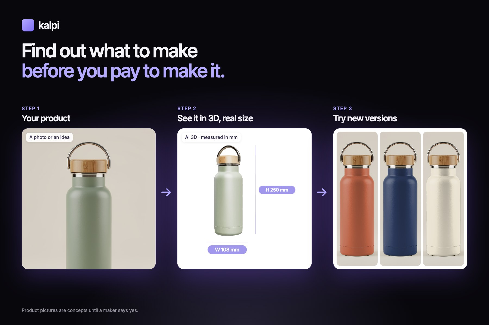

A first product means paying for samples, shipping and minimum orders before you know if anyone wants it. Kalpi turns a flat design into a real-size 3D prototype inside Figma, then lets you try versions of it, all before anything is manufactured.

Imagining a product takes seconds. Getting a sample takes weeks: you describe it to a factory, pay, wait for shipping, and open a box where the proportions are off. Then you do it again. And even when it is right, you still don't know if anyone will buy it.
Designers already draw these products in Figma. Figma's forum has years of requests for 3D, and the answer has always been "export it to another tool." AI image-to-3D models are fast, but they work in a unit cube: no real size, blurry labels, and a back they invent.
AI guesses the shape. Figma already knows the size, the outline and the label.
Round products spin from their outline (bottles, jars, cans). Logos and flat shapes extrude with a bevel. Soft shapes inflate gradually. All of it is plain three.js, so it costs nothing and keeps the designer's exact vectors.
For a product photo or a complex form, the plugin sends the picture to TRELLIS 2 or Tripo on fal.ai through a small Python helper, so the API key never sits in the plugin. The model comes back and is snapped to the size of the Figma layer.
One pixel on a Figma frame is one millimetre. The 3D view draws W, H and D lines, you can type exact sizes, and the model exports as a GLB file ready for the web, AR or a manufacturer.
The hardest part was keeping the designer's intent. An AI model can make a convincing bottle that is the wrong size with a smudged label. Using Figma's own geometry first, and AI only for what geometry can't describe, keeps the design exact.
Running the open TRELLIS 2 model on our own GPU to bring the cost per model from about 35 cents to a few cents. Matching a design to shapes factories already have moulds for, so a creator doesn't pay for new tooling. And handing a finished, measured spec straight to a manufacturer.